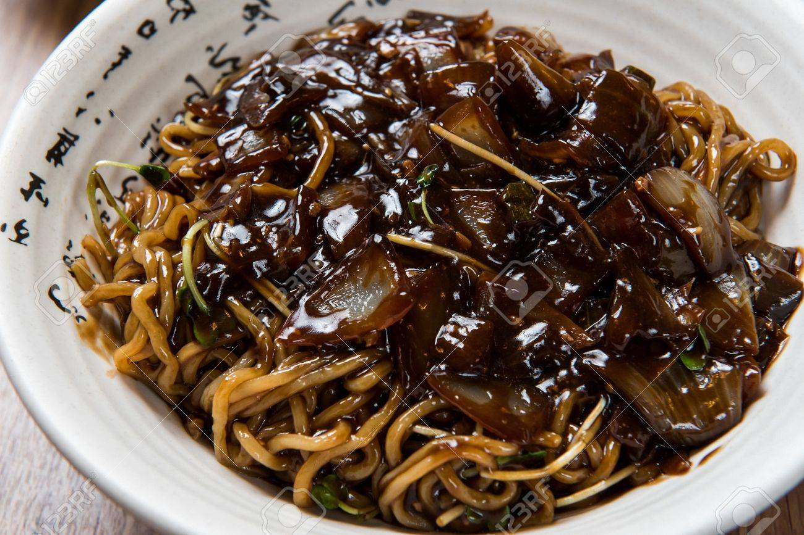
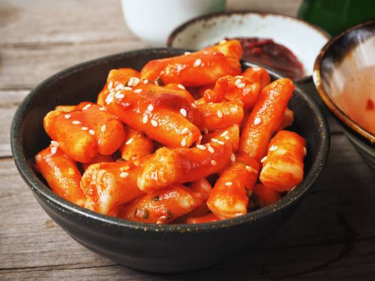
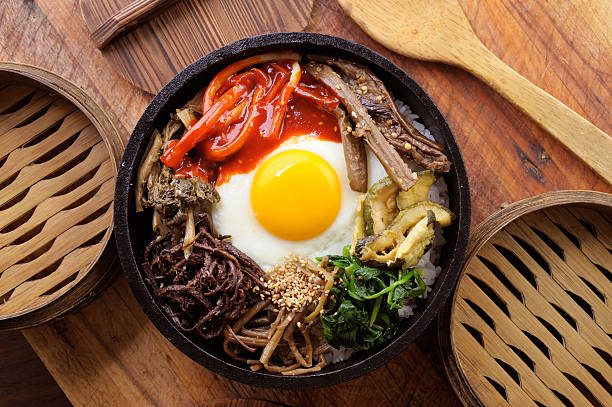
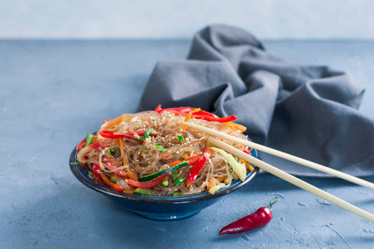
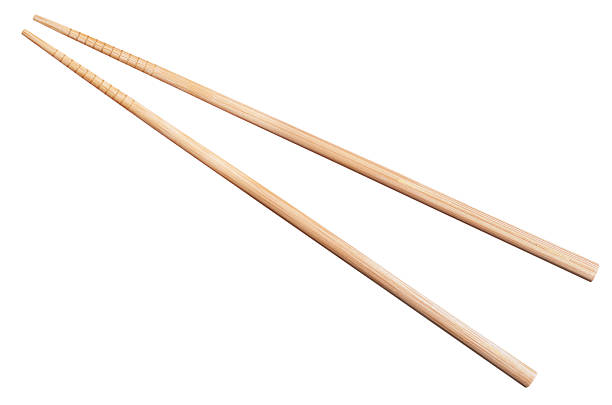

Recommended Dishes
We have all heard the phrase "When in Rome, Do as the Romans Do." This phrase extends out even as far as South Korea. Below are list of delicious korean cuisines that guaranteed to keep your belly full and give you the energy needed while travelling throughout korea. You can find these wonderful dishes in just about every restaurant. Trust me, it worth a try!
Korean Cuisine
Kimchi 김치

Jjajangmyeon 짜장면
Tteokbokki 떡볶이
Bibimbap 비빔밥
Japchae 잡채
If you would like more recommendations on places to enjoy the above dishes, click the chopsticks below.
